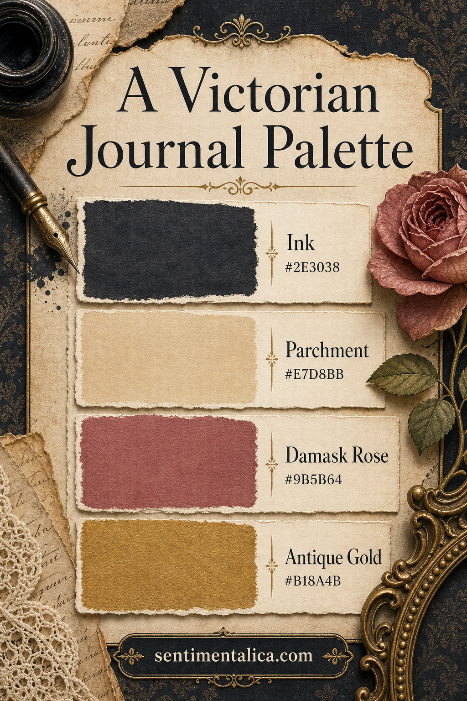
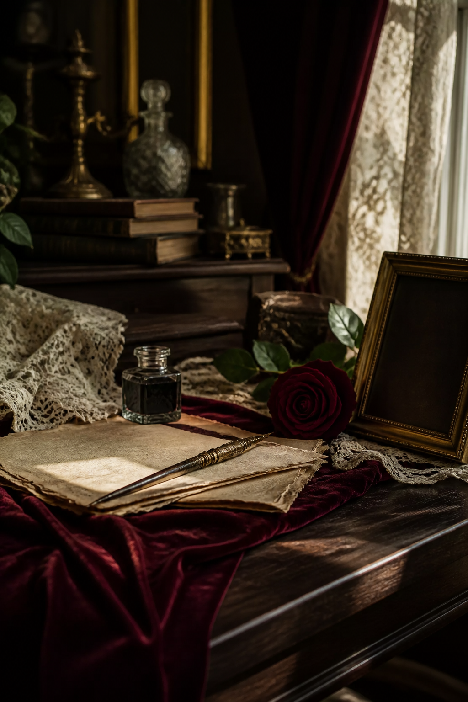

Victorian-inspired pages need contrast more than ornament. Dark ink gives the eye a frame, parchment keeps the work readable, damask rose adds faded romance, and antique gold introduces light without looking bright or modern.

Frame with Ink
Ink #2E3038 can appear as a narrow border, silhouette, type, or one dark paper layer. It should define the page rather than swallow it. When the anchor is this deep, ordinary black can look harsh beside it, so repeat the same blue-charcoal family in pen marks and thread.
Write on Parchment
Parchment #E7D8BB is the working neutral. Use it for labels, journaling space, and the largest paper shapes. Distress the edges lightly, but leave the middle clean. A readable center makes aged edges feel intentional.

Balance Rose and Gold
Damask Rose #9B5B64 is soft enough for a medium-sized floral or ribbon. Antique Gold #B18A4B should be smaller: a frame line, seal, nib, or tiny stamped motif. Metallic paint works best when it catches light only as the page moves.
Try a simple ratio of two parchment areas, one ink anchor, one rose detail, and two tiny gold repetitions. That structure gives the page Victorian atmosphere without turning it into a costume set.
Visuals in this article were created with AI assistance and art-directed for Sentimentalica.
Browse more historical journal inspiration in the Sentimentalica journal archive.